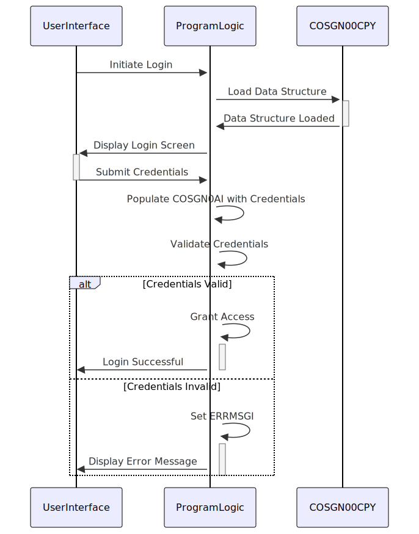

Gerado em: 1 de outubro de 2024
Título do Documento: Estrutura de Informação de Login do Usuário
Descrição Resumida:
Esta documentação detalha o copybook COBOL COSGN00.CPY, definindo estruturas de dados para informações de login do usuário. Ele descreve a organização e os elementos dentro dessas estruturas, cruciais para autenticação do usuário e interação com o sistema. O copybook não contém nenhuma lógica ou código procedural; ele simplesmente define o layout dos dados.
Histórias do Usuário: Como administrador do sistema, preciso de uma maneira padronizada de gerenciar as informações de login do usuário, garantindo armazenamento seguro e acesso para fins de autenticação e autorização.
Épico Relacionado: 6 - Gerenciamento de Usuários e Segurança
Requisitos Técnicos:
Estruturas de Dados:
COSGN0AI: Define o formato para receber informações de login do usuário.
TRNNAMEL, TRNNAMEA, TRNNAMEI: Nome da transação em diferentes formatos (numérico, caractere único, 4 caracteres).TITLE01L, TITLE01A, TITLE01I: Título da tela em diferentes formatos (numérico, caractere único, 40 caracteres).CURDATEL, CURDATEA, CURDATEI: Data atual em diferentes formatos (numérico, caractere único, 8 caracteres).PGMNAMEL, PGMNAMEA, PGMNAMEI: Nome do programa em diferentes formatos (numérico, caractere único, 8 caracteres).TITLE02L, TITLE02A, TITLE02I: Campo de título adicional em diferentes formatos.CURTIMEL, CURTIMEA, CURTIMEI: Hora atual em diferentes formatos.APPLIDL, APPLIDA, APPLIDI: ID do aplicativo em diferentes formatos.SYSIDL, SYSIDA, SYSIDI: ID do sistema em diferentes formatos.USERIDL, USERIDA, USERIDI: ID do usuário em diferentes formatos.PASSWDL, PASSWDA, PASSWDI: Senha em diferentes formatos.ERRMSGL, ERRMSGA, ERRMSGI: Mensagem de erro em diferentes formatos.COSGN0AO: Usa REDEFINES em COSGN0AI para fornecer uma visão alternativa dos dados, potencialmente para diferentes cenários de processamento. Os campos nesta estrutura provavelmente correspondem a caracteres individuais ou grupos de caracteres dentro dos campos de COSGN0AI.Validação de Dados:
USERIDI e PASSWDI fornecidos em relação às credenciais armazenadas. Este processo de validação não está definido no copybook, mas deve ser implementado na lógica do programa usando esta estrutura de dados.Regras de Negócio:
PASSWDI sugere o armazenamento de senhas de usuário. É crucial manipular e armazenar senhas com segurança usando algoritmos de criptografia ou hashing para evitar acesso não autorizado. Este aspecto não está explicitamente definido no copybook, mas é essencial para a segurança do sistema.ERRMSGI indica um mecanismo para comunicar erros durante o processo de login. O sistema deve fornecer mensagens de erro claras e informativas para orientar o usuário em caso de tentativas de login inválidas.Modelos Relacionados
COSGN0AI: Esta estrutura representa informações de login do usuário, incluindo detalhes da transação, carimbos de data/hora, credenciais do usuário e possíveis mensagens de erro.
TRNNAMEI String: Indica o tipo de transação que está sendo realizada (por exemplo, “LOGON”, “LOGOFF”).TITLE01I String: Contém um título descritivo, provavelmente relacionado à tela ou função específica que está sendo acessada.CURDATEI String: Armazena a data atual quando a tentativa de login ocorreu.CURTIMEI String: Registra a hora atual da tentativa de login.USERIDI String: Contém o identificador exclusivo do usuário.PASSWDI String: Armazena a senha do usuário associada ao USERIDI fornecido.ERRMSGI String: Carrega uma mensagem de erro se a tentativa de login falhar na validação ou encontrar problemas.COSGN0AO: Esta estrutura parece redefinir COSGN0AI, potencialmente oferecendo uma visão em nível de caractere dos dados. Seu propósito não é claro sem mais contexto ou como ele é utilizado no aplicativo.
Configurações:
Melhorias de Código:
PASSWDI para proteger as credenciais confidenciais do usuário. Não armazene senhas em texto não criptografado.ERRMSGI, considere usar um campo de código de erro numérico junto com a mensagem. Isso permite um tratamento programático mais fácil de diferentes cenários de erro.CURDATEI e CURTIMEI (por exemplo, YYYYMMDD, HHMMSS) para consistência e análise mais fácil.Melhorias de Segurança:
PASSWDI).Diagrama Conceitual:
–Made by “Smart Engineering” (by Compass.UOL)–